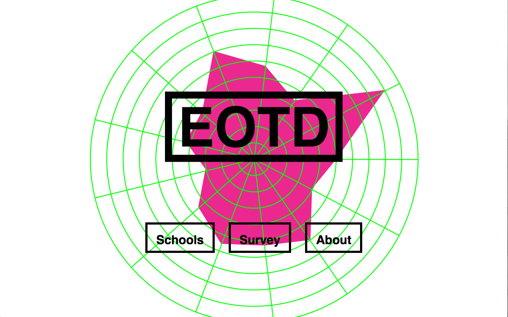
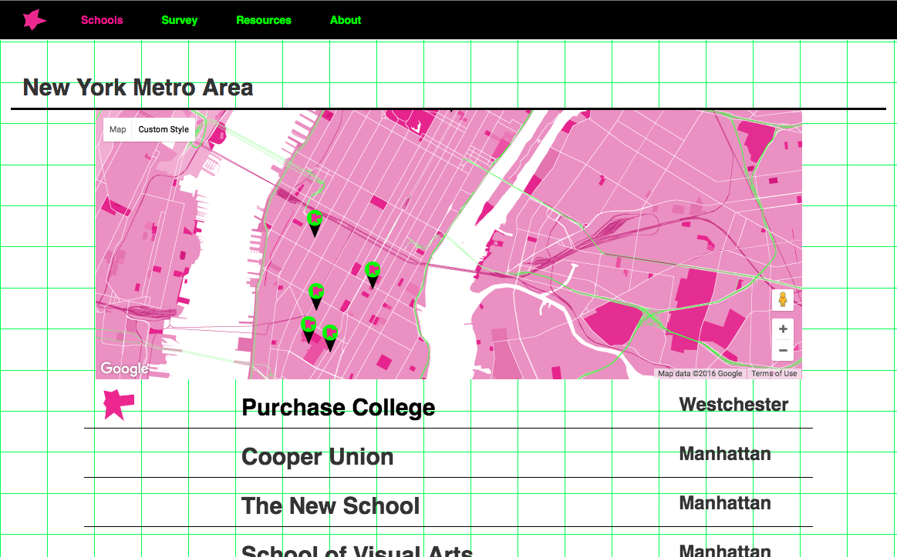
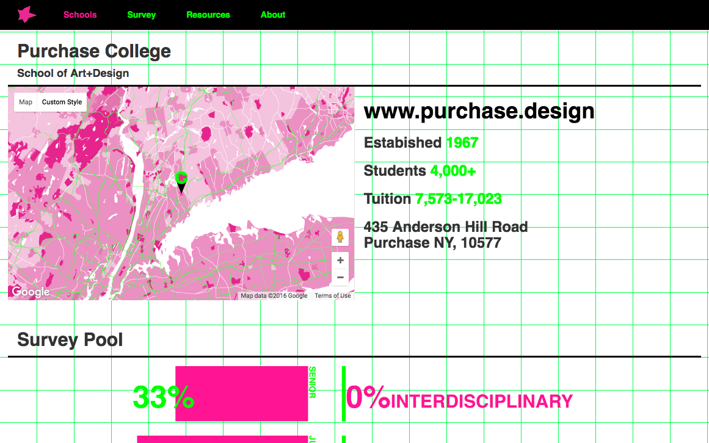
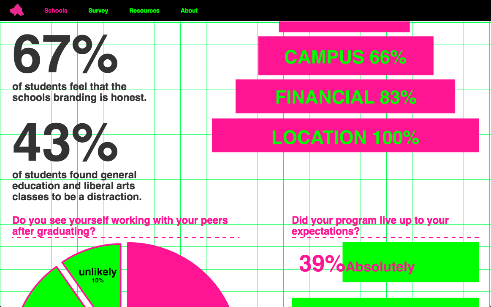
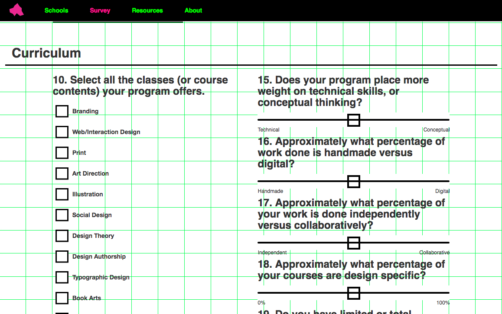
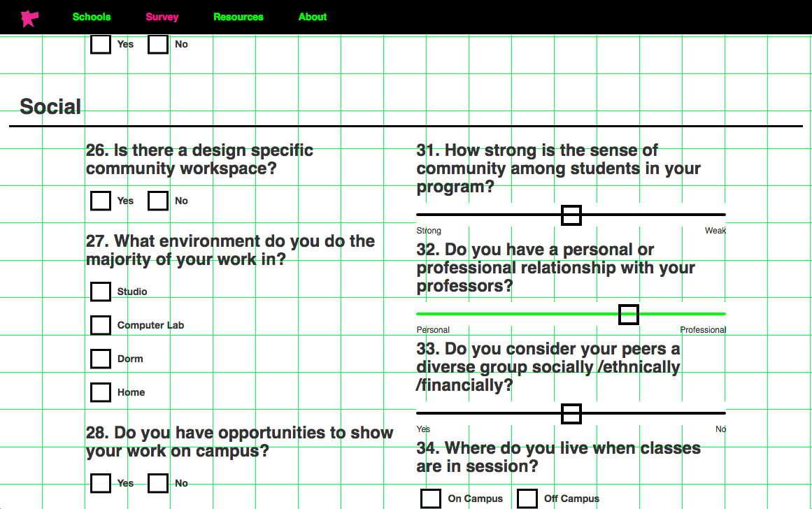
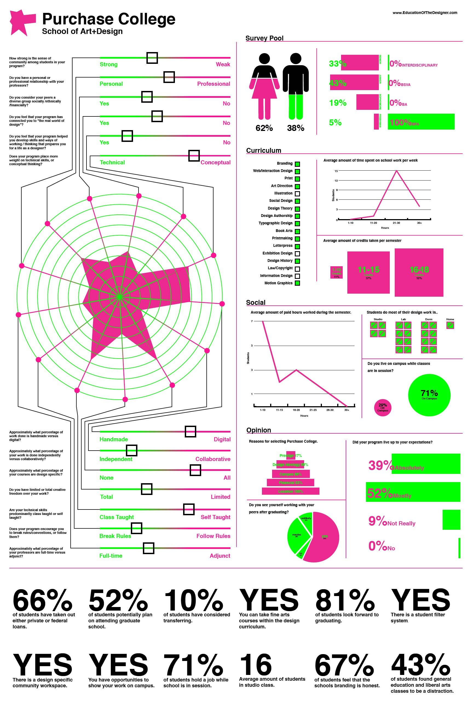
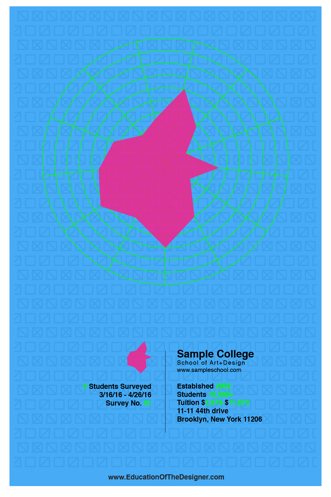
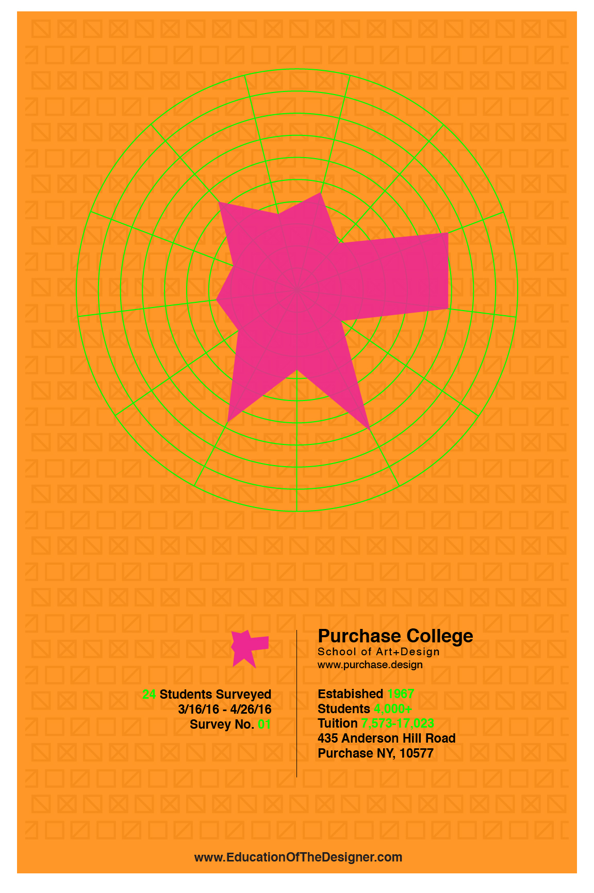

EducationOfTheDesigner
EOTD is a project addressing the lack of clarity in how creative education is represented. By exploring new criteria for classification, we can represent the hidden values of an education in the arts. Asking the questions specific to an education in the arts, we can go deeper into the ideologies and processes that make creative education's unique.

www.EducationOfTheDesigner.com
        